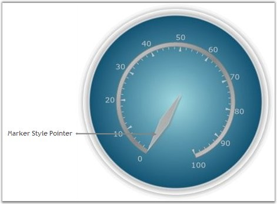

Marker can be customized using the MarkerStyle property; following are the in-built styles available for the MarkerStyle property.
· Diamond
· Ellipse
· Pentagon
· Rectangle
· Trapezoid
· Triangle
Refer to the below code snippet for setting these properties.
|
[XAML]
<sfgauge:CircularGauge Height="Auto" Width="Auto" Radius="170" Name="circularGauge1" FrameType="FullCircle" Margin="3" CenterFrameFillColor="Blue" > <sfgauge:CircularGauge.Scales> <sfgauge:CircularScale x:Name="m_scale" Radius="100" StartAngle="110" GapSweepAngle="320" ScaleBarSize="5" ShadowOffset="5" Minimum="0" Maximum="100" MinorIntervalValue="2" MajorIntervalValue="10" BorderBrush="Gray" Background="Silver" Location="50,50"> <sfgauge:CircularScale.Pointers> <sfgauge:CircularPointer Background="Silver" Name="m_pointer1" BorderBrush="Silver" PointerLength="100" PointerWidth="15" Value="0" PointerPlacement="Inside" PointerNeedleType="Marker" MarkerStyle="Diamond"/> </sfgauge:CircularScale.Pointers> </sfgauge:CircularScale> </sfgauge:CircularGauge.Scales> </sfgauge:CircularGauge> |
|
[C#]
CircularGauge circulargauge1 = new CircularGauge(); circulargauge1.CenterFrameFillColor = Colors.Blue; LayoutRoot.Children.Add(circulargauge1);
CircularScale c_scale = new CircularScale(); c_scale.Radius = 110; c_scale.StartAngle = 120; c_scale.GapSweepAngle = 300; c_scale.ScaleBarSize = 10; c_scale.Location = new Point(50, 50); c_scale.ShadowOffset = 5; c_scale.ShadowOffset = 5; c_scale.Minimum = 0; c_scale.Maximum = 100; c_scale.MinorIntervalValue = 2; c_scale.MajorIntervalValue = 10; c_scale.Background = new SolidColorBrush(Colors.LightGray); c_scale.BorderBrush = new SolidColorBrush(Colors.Blue); c_scale.BorderThickness = new Thickness(0.5); circulargauge1.Scales.Add(c_scale);
// Adding pointer. CircularPointer c_pointer = new CircularPointer(); c_pointer.PointerLength = 110; c_pointer.PointerWidth = 20; c_pointer.Background = new SolidColorBrush(Colors.Red); c_pointer.PointerNeedleType = PointerNeedleType.Marker; c_pointer.MarkerStyle = MarkerStyle.Diamond; c_scale.Pointers.Add(c_pointer); |

Figure 36: Pointer with Marker Style set to Diamond